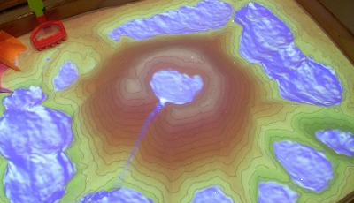
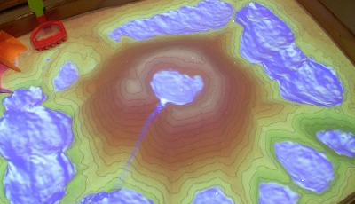

compute the scale of your model and its vertical exageration - example
what would be the width of a road, size of 1 story bldg, width of stream?
what resolution do we need to scan it at?
what size of feature change can be detected?
Scanning the physical model
3D sensors: kinect, new types, principle
calibration process
acquiring the point cloud
point cloud filtering
kinect calibration
Processing the point cloud
filtering
extraction of edges
Processing the point cloud
filtering
extraction of edges
gridding: binning or interpolation
georeferencing
Processing the point cloud
filtering
extraction of edges
gridding: binning or interpolation
georeferencing
Georeferencing - rescaling
$$
S_x = \frac{X_{east} - X_{west}}{x_{max} - x_{min}},\quad
S_y = \frac{Y_{north} - Y_{south}}{y_{max} - y_{min}},\quad
S_z = \frac{(S_x + S_y) / 2}{e}
$$
where $X, Y$ are DEM (real-world) coordinates,
$x, y$ are coordinates of the physical model
$e$ is the specified vertical exaggeration.
Georeferencing
Rescaling, rotation and translation
$$ G = S \dot R + T$$
which rotates the points around the $z$ axes by angle $\alpha$ in the counterclockwise direction,
scales to real-world dimensions, and translates the points
by adding $t_x$ and $t_y$ computed so that the lower left corner of the model
matches the south-west corner of the DEM.
The vertical translation $t_z$ is then similarly computed
to match the lowest point of the model and the minimum height of the DEM.
Tangible interactions
of both depth and color information coming from the 3D scanner.
split interactions - ask how they think they are handled
Tangible interactions: markers
of both depth and color information coming from the 3D scanner.
map algebra detects the markers (differencing)
vector geometries: markers can be interpreted as points or combined into polylines.
traveling salesman heuristics is used to combine detected markers into lines
Tangible interactions
Areas of different categories: pieces of colored felt.
Direction can be intuitively manipulated using a colored marker.
of both depth and color information coming from the 3D scanner.
raster algebra, and remote sensing techniques like image segmentation and classification.


 
